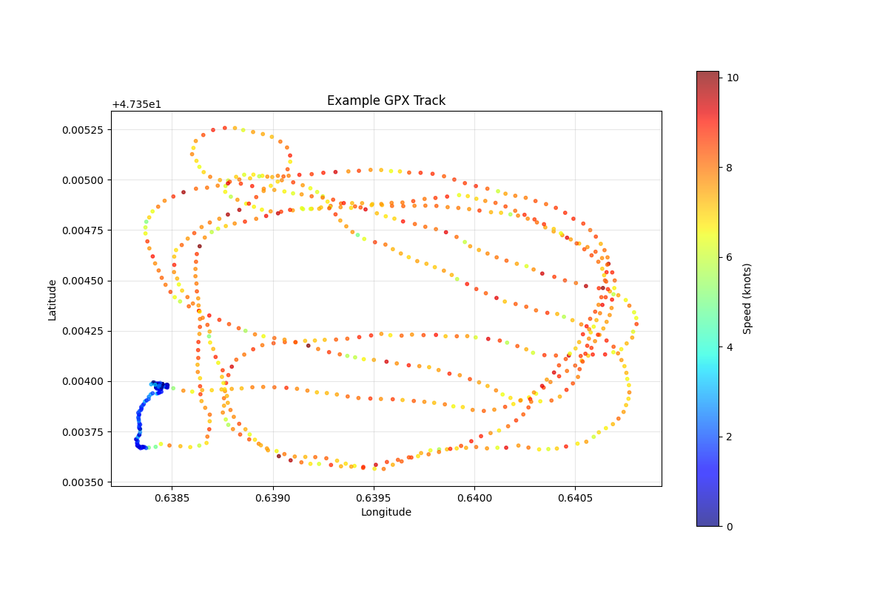

Note
Go to the end to download the full example code.
Getting Started with GpxTrack¶
This example demonstrates the basic functionality of the GpxTrack class.
Import required modules
from otGpxTrack.Base import GpxTrack
import os
Get the path to the example GPX file
example_file = os.path.join('..', '..', 'firstexample', 'activity_19218242997.gpx')
Load the GPX track
track = GpxTrack(example_file)
Get basic track information
print("Basic Track Information:")
print(f" Distance: {track.get_distance():.2f} meters")
print(f" Duration: {track.get_duration():.2f} seconds")
print(f" Average Speed: {track.get_average_speed():.2f} m/s")
Basic Track Information:
Distance: 2482.08 meters
Duration: 731.00 seconds
Average Speed: 3.40 m/s
Get OpenTURNS sample
sample = track.get_openturns_sample()
print(f"\nOpenTURNS Sample:")
print(f" Size: {sample.getSize()}")
print(f" Dimension: {sample.getDimension()}")
print(f" Descriptions: {sample.getDescription()}")
OpenTURNS Sample:
Size: 732
Dimension: 5
Descriptions: [Latitude,Longitude,Elevation,Time,Speed]
Find best segments
print("\nBest Segments:")
start_idx, end_idx, speed = track.get_best_segment_for_distance(500)
print(f" Best 500m: {speed:.2f} knots")
start_idx, end_idx, speed = track.get_best_segment_for_time(10.0)
print(f" Best 10s: {speed:.2f} knots")
Best Segments:
Best 500m: 8.03 knots
Best 10s: 8.57 knots
AR-1 Simulation for best segments
print("\nAR-1 Simulation Results:")
# Simulate for best 500m segment
mean_speed, lower, upper, _ = track.simulate_ar1_speeds((start_idx, end_idx))
print(f" Best 500m segment (AR-1):")
print(f" Mean speed: {mean_speed:.2f} knots")
print(f" 95% CI: [{lower:.2f}, {upper:.2f}] knots")
# Simulate for best 10s segment
start_idx, end_idx, _ = track.get_best_segment_for_time(10.0)
mean_speed, lower, upper, _ = track.simulate_ar1_speeds((start_idx, end_idx))
print(f" Best 10s segment (AR-1):")
print(f" Mean speed: {mean_speed:.2f} knots")
print(f" 95% CI: [{lower:.2f}, {upper:.2f}] knots")
AR-1 Simulation Results:
Best 500m segment (AR-1):
Mean speed: 8.86 knots
95% CI: [8.01, 9.76] knots
Best 10s segment (AR-1):
Mean speed: 8.88 knots
95% CI: [7.99, 9.77] knots
Plot the track with speed in knots
print("\nGenerating plot...")
fig = track.plot_track(title="Example GPX Track", figsize=(12, 8), speed_unit="knots")

Generating plot...
Save the plot
save_path = 'getting_started_plot.png'
fig.savefig(save_path, dpi=300, bbox_inches='tight')
print(f"Plot saved to: {save_path}")
Plot saved to: getting_started_plot.png
Show the plot (in interactive environments) plt.show()
print("\nExample completed successfully!")
Example completed successfully!
Total running time of the script: (0 minutes 2.390 seconds)